IES Valle del Alberche

📘 Presentación
Colección de problemas resueltos de formulación y nomenclatura de alcoholes y fenoles, según las reglas IUPAC.
Se abordan, de forma progresiva:
- El grupo funcional hidroxilo (–OH) y su prioridad frente a otros grupos.
- Clasificación de los alcoholes en primarios, secundarios y terciarios según el tipo de carbono al que se une el –OH.
- Reglas de nomenclatura: elección de la cadena principal, numeración, sufijo -ol, prefijo hidroxi- y prioridad sobre alquenos y alquinos.
- Nomenclatura de fenoles y uso de los prefijos orto-, meta- y para-.
- Paso inverso: escribir la fórmula estructural a partir del nombre.
- Errores frecuentes al nombrar alcoholes y fenoles.
🎯 Objetivo
- Identificar el grupo hidroxilo (–OH) y distinguir alcoholes de fenoles.
- Clasificar un alcohol como primario, secundario o terciario a partir de su estructura.
- Seleccionar la cadena principal que contenga el –OH y numerarla para darle el localizador más bajo.
- Aplicar la terminación -ol y la posición del localizador del grupo hidroxilo.
- Reconocer cuándo el alcohol pasa a ser un simple sustituyente (hidroxi-) por existir grupos de mayor prioridad.
- Nombrar fenoles y utilizar correctamente los prefijos o-, m- y p-.
- Escribir la fórmula estructural de un alcohol o fenol a partir de su nombre IUPAC.
📚 Recordatorio teórico: clasificación y reglas de nomenclatura Pulsame
🧪 ¿Qué es un alcohol?
Los alcoholes son compuestos orgánicos que contienen el grupo funcional hidroxilo (–OH) unido a un carbono con hibridación sp³ (carbono saturado).
Si el –OH se une a un anillo aromático (benceno), el compuesto se denomina fenol y su fórmula general es Ar–OH.
🔬 Clasificación: primarios, secundarios y terciarios
El alcohol se clasifica según el tipo de carbono al que esté unido el grupo –OH:
- Primario: el –OH se une a un carbono primario (unido a un solo carbono).
- Secundario: el –OH se une a un carbono secundario (unido a dos carbonos).
- Terciario: el –OH se une a un carbono terciario (unido a tres carbonos).
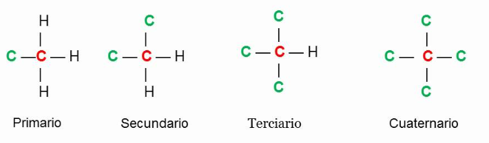
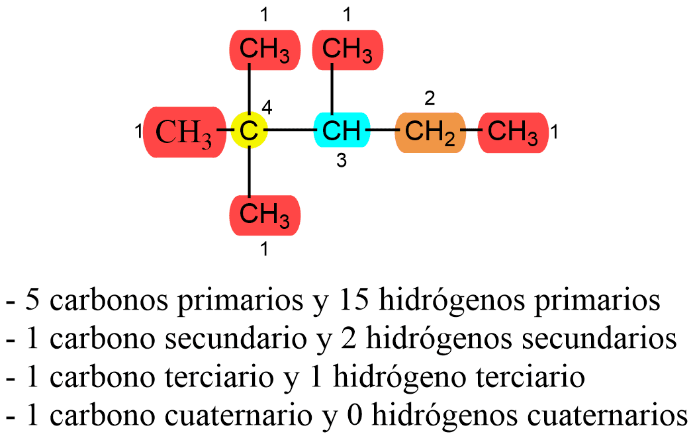
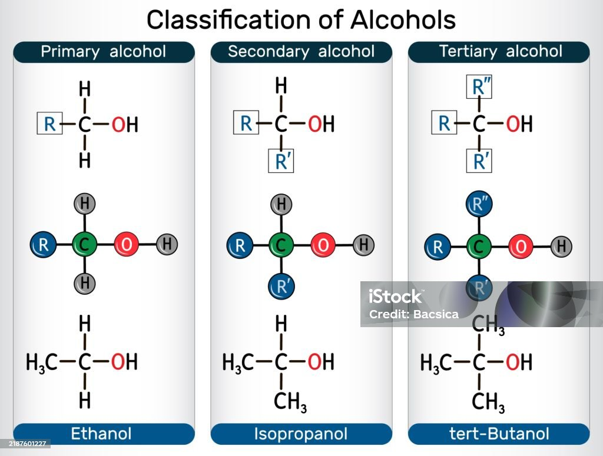
📝 Nomenclatura de alcoholes: 5 reglas básicas
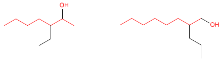
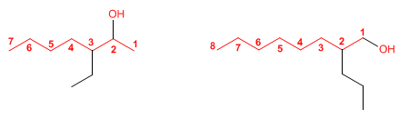
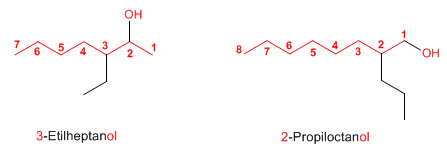
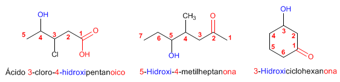
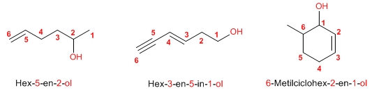
🌸 Nomenclatura de fenoles
- La sustitución del átomo de H se produce en un benceno.
- La fórmula general es: Ar–OH (aromático).
- Terminación fenol, comenzando la numeración en el –OH (posición 1).
- En caso de dos sustituyentes se usan los prefijos:
- o- (orto-): posición 1,2-
- m- (meta-): posición 1,3-
- p- (para-): posición 1,4-
🧪 PROBLEMAS RESUELTOS de alcoholes y fenoles Pulsame
Problema 1 Escribe el diagrama: 3-Metilbutan-1-ol
3-Metilbutan-1-ol
Solución
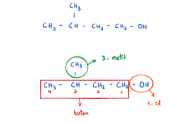
Problema 2 Escribe el diagrama: Pent-4-en-2-ol
Pent-4-en-2-ol
Solución
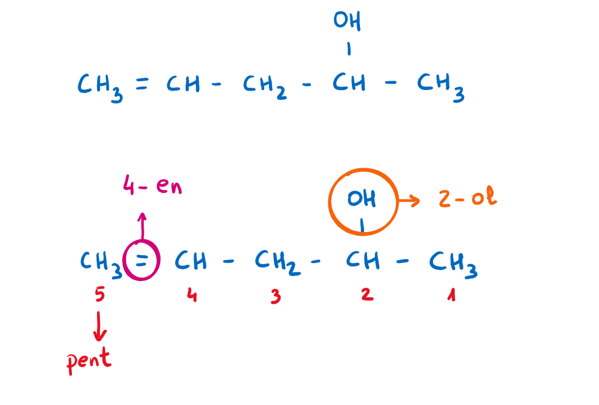
Problema 3 Escribe el diagrama: Hex-2-in-1,6-diol
Hex-2-in-1,6-diol
Solución
Estructura: CH2OH–CH2–CH2–C≡C–CH2OH
Problema 4 Escribe el diagrama: 4-Cloro-3-metilhex-1-en-2-ol
4-Cloro-3-metilhex-1-en-2-ol
Solución
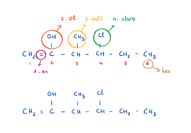
Estructura: CH2=C(OH)–CH(CH3)–CHCl–CH2–CH3
Problema 5 Escribe el diagrama: Fenol
Fenol
Solución
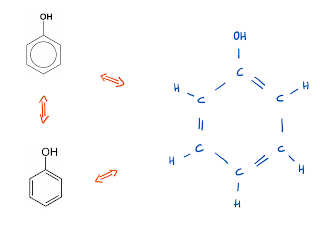
Estructura: C6H5–OH (benceno con un grupo –OH en posición 1).
Problema 6 ¿A qué fórmula corresponde el 2-Metilfenol?
2-Metilfenol (o o-Metilfenol)
Solución
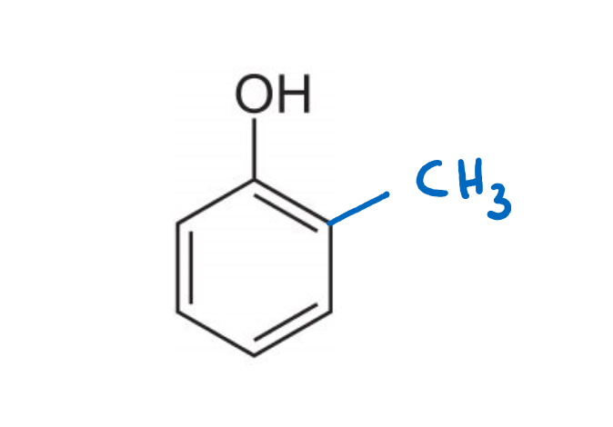
Problema 7 ¿A qué fórmula corresponde el 2-Etilfenol?
2-Etilfenol (o o-Etilfenol)
Solución
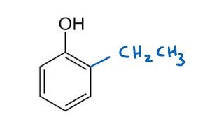
Problema 8 ¿A qué fórmula corresponde el 3-Cloro-4-metilfenol?
3-Cloro-4-metilfenol
Solución
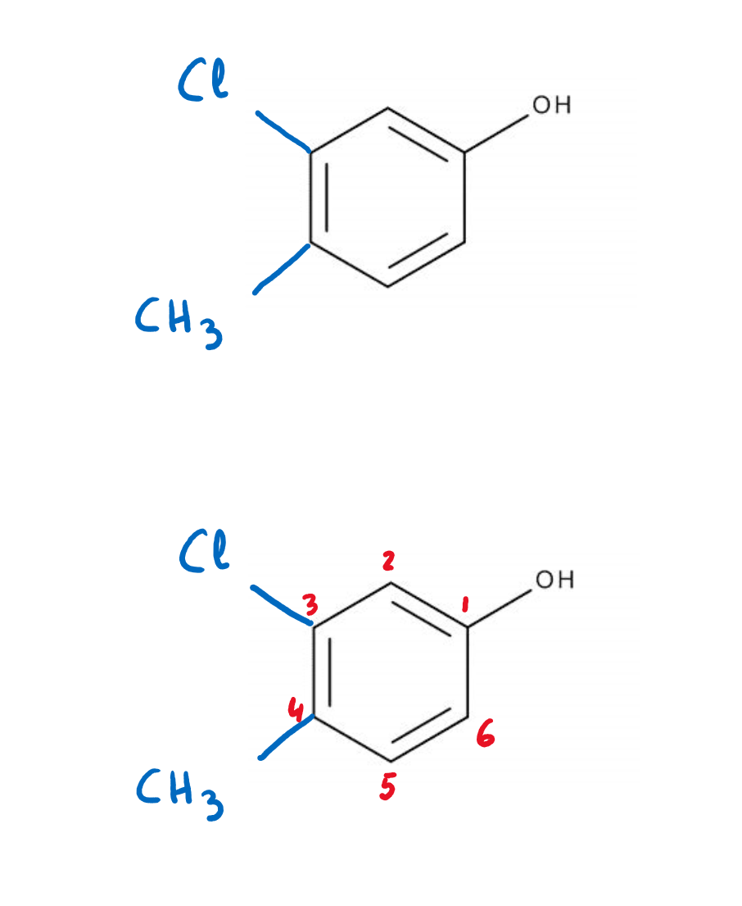
- La cadena principal debe contener el grupo –OH y ser la más larga posible.
- Se numera por el extremo que dé al –OH el localizador más bajo.
- El nombre termina en -ol (o -diol, -triol… si hay varios hidroxilos).
- El –OH es prioritario frente a halógenos, dobles y triples enlaces; pero cede frente a ácidos, ésteres, amidas, aldehídos, cetonas y nitrilos (se nombra entonces como hidroxi-).
- Los fenoles se nombran terminando en fenol, con el –OH en la posición 1.
- Con dos sustituyentes en el anillo se usan o- (1,2), m- (1,3) y p- (1,4); con tres o más se emplean localizadores numéricos.
- Puntuación: los números se separan de las letras con guiones, los localizadores entre sí con comas y nunca se dejan espacios.